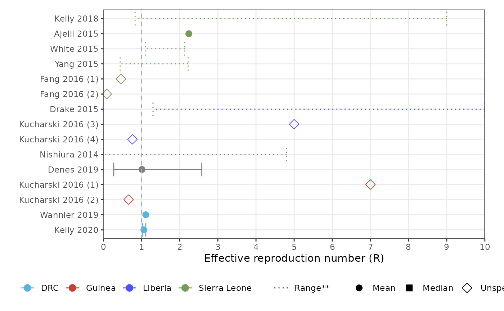
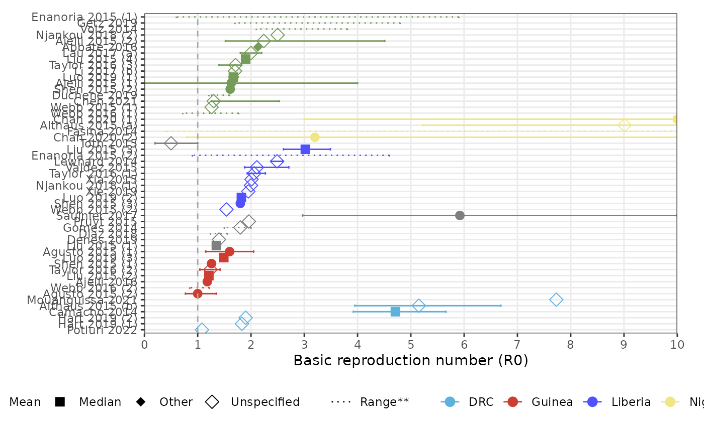

load-filter-view-epidata
Source:vignettes/load-filter-view-epidata.Rmd
load-filter-view-epidata.Rmd
ebola <- load_epidata('ebola')
#> Warning: One or more parsing issues, call `problems()` on your data frame for details,
#> e.g.:
#> dat <- vroom(...)
#> problems(dat)
#> Warning in load_epidata_raw(pathogen, "outbreak"): No data found for ebola
#> Warning: One or more parsing issues, call `problems()` on your data frame for details,
#> e.g.:
#> dat <- vroom(...)
#> problems(dat)
#> Warning in load_epidata("ebola"): No outbreaks information found for ebola
#> Data loaded for ebola
params <- ebola[["params"]]
params <- filter_cols(params, "article_qa_score", funs = ">", vals = "50")
forest_plot_rt(params, col_by = "population_country", shape_by = "parameter_value_type")
#> Warning: Removed 5 rows containing missing values or values outside the scale range
#> (`geom_point()`).
forest_plot_r0(params, col_by = "population_country", shape_by = "parameter_value_type")
#> Warning: Removed 9 rows containing missing values or values outside the scale range
#> (`geom_point()`).